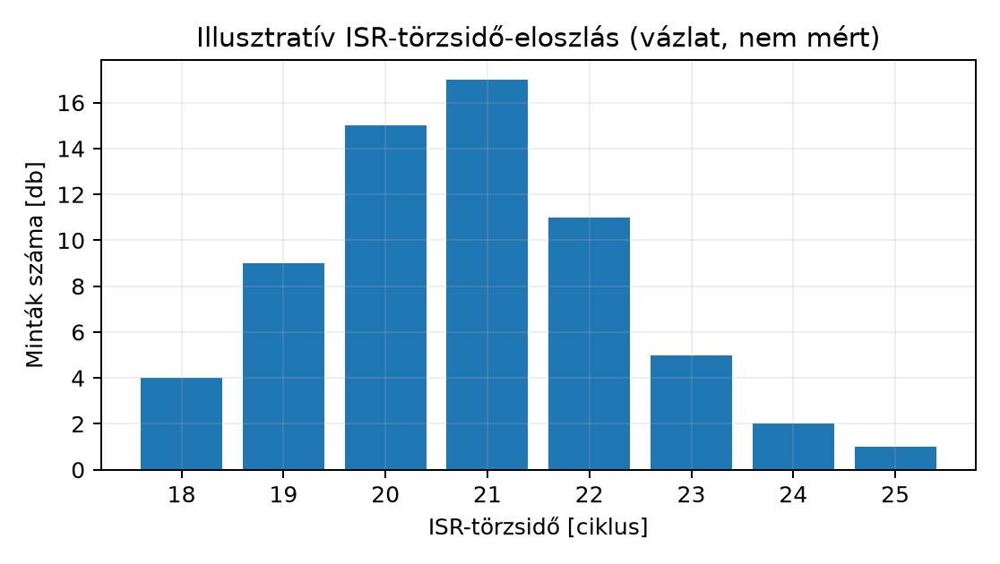

Az előző alfejezetben (driver és ISR integrálása) összeállt egy firmware, amelyben egy periféria-illesztő, az ISR, a vektorbejegyzés, az NVIC konfiguráció és a megosztott SPSC ring buffer egyetlen, QEMU-ban betölthető egésszé áll össze. A fejlesztő fejében innen gyakran az a mondat születik, hogy „kész, működik”. Egy mérnöki projektben ez nem elég: a „működik” egy személyes megfigyelés, amely nem mondja meg, milyen bemenetre, milyen sorrendben, milyen feltételek mellett, és mi az, ami nem működik. Az a080 célja, hogy a modult mérhető, önállóan reprodukálható egységgé zárja: olyan funkcionális tesztekkel, amelyeknek van elfogadási kritériumuk, és olyan latenciaméréssel, amelynek van dokumentált módszere és ismert korlátja.
A konkrét mérnöki feladat három, egymástól jól elkülöníthető kérdés megválaszolása. (1) Funkcionális: teljesíti-e a firmware az a078 követelményeit (K1–K6), és a kapacitáson belüli bemenet helyesen, sorrendhelyesen és veszteség nélkül jut-e a ring bufferből a fogyasztóhoz (F2), illetve a tele puffer a rögzített veszteségpolitika szerint viselkedik-e (F3)? (2) Teljesítmény: mennyi ciklust tölt az ISR törzse az első mérőponttól az utolsóig, és mekkora ennek a szórása? (3) Reprodukálhatóság: ha a jegyzőkönyvbe beírom a pontos parancsot és a bemenetet, egy másik mérnök ugyanazon a gépen ugyanabban az eredmény-tartományban kapja-e vissza ugyanazt? A fejezet ezt a hármat tanítja egymásra építve, mert a három közül bármelyik hiányában a másik kettő nem áll.
A fejezet három kulcsfogalmat vezet be, amelyeket élesen megkülönböztetünk.
Az a080 hatásköre szűk: nem írunk formális verifikációt (modell-ellenőrzés, szerződéses bizonyítás), és nem építünk RTOS-ütemezőt vagy kernel-szolgáltatásokat. A validáció célja a meglévő modul viselkedésének dokumentált bemutatása és a mérés megismételhetővé tétele — semmi ennél több.
A funkcionális validáció és a teljesítménymérés két különböző kérdést válaszol meg, és két különböző elfogadási kritériumot kap. Ez azért fontos, mert a gyakorlatban gyakran összekeverik őket: egy gyors, de hibás ISR nem „jobb”, és egy pontos, de lassú ISR nem „sikeres”. Az elfogadási kritérium mindig mindkét tengelyen megfogalmazandó.
A funkcionális tesztek célja, hogy a driver-ISR-integrációt nem egyetlen „szép” futásra, hanem előre megfogalmazott esetekre próbálja ki. Két, egymástól független réteget használunk, és mindkettő futtatható, nem vázlat:
lab-m19-ring.c), ezért a host
gcc-jével, hardver és emulátor nélkül tesztelhető. Esetek:
alapeset és sorrendtartás (3 bájt be, ugyanaz ki, sorrendben), üres
puffer (a pop nem olvas, a tail helyben
marad), tele puffer (pontosan 63 bájt fér el, a többi az F3 politikája
szerint elvész, és az overrun számolja), körbefordulás
(5000 bájt kis adagokban, kapacitáson belül, veszteség nélkül), határ
(az N−1 = 63. elem még befér, az N. elemre az előírt overflow következik
be), és lassú fogyasztó (kettőt tesz be, egyet vesz ki: a kivett bájtok
sorrendben egyeznek az elfogadottakkal, az overrun pontosan
az elutasított push-ok száma). A tele puffer viselkedése
itt determinisztikusan vizsgálható, a soros vonalon nem.-serial stdio a QEMU-folyamat stdin/stdout-jára köti. A
hostoldali lab-m19-systest.py ide ír bájtokat: ez valódi
RX-injektálás a periférián keresztül, és a firmware
UART-ISR-je fogadja őket. A választ a kimeneten olvassa. A firmware a
saját DATA-írásával nem tudna RX-et szimulálni: az a
TX-irány.Egy tesztsorozat csak akkor értékelhető, ha előre rögzítettük, mi számít sikernek. A kritériumokat a teszt futtatása előtt fogalmazzuk meg, és mindegyik egy követelményhez tartozik:
| # | Tengely | Elfogadási kritérium | Mérési mód |
|---|---|---|---|
| F1 | Helyesség | minden egység- és rendszerteszt PASS (a
SKIP nem számít sikernek, de hibának sem) |
make test kimenete |
| F2 | Veszteségmentesség a kapacitáson belül | a legfeljebb 63 bájtos burst bájtjai sorrendben, hiánytalanul visszaíródnak | rendszerteszt F2, egységteszt U1,
U4, U6 |
| F3 | Veszteségpolitika tele puffernél | az új bájt elveszik, az overrun pontosan az eldobottak
számával nő |
egységteszt U3, U5, U6 |
| P1 | ISR-törzsidő stabilitása | működő DWT mellett a min..max egy előre rögzített,
platformonként megadott sávban; DWT nélkül SKIP |
M parancs (K5a formátum, K5b sáv) |
| T1 | Időbázis | a tickfrekvencia 100 Hz ±20% egy valós idejű futtatón; nem valós
idejűnél SKIP |
rendszerteszt T1 |
Tele puffernél tehát nem írunk elő veszteségmentességet: az F2 csak a kapacitáson belüli esetekre szól, a tele puffert az F3 szabályozza. A kritérium rögzítése azért kötelező, mert utólag mindig könnyű „hozzáigazítani” az elvárást az eredményhez. Az előzetes kritérium az egyetlen védelem ez ellen.
Az a071 alfejezetben megismert módszert itt a
konkrét modulra alkalmazzuk, de pontosan meg kell
nevezni, mit mér. A lab-m19 UART-ISR-je az első
végrehajtható utasításában és a visszatérés előtt is beolvassa a DWT
CYCCNT számlálót. A különbség az
ISR-törzsidő: a két mérőpont között eltelt ciklusszám.
Ez nem belépési latencia:
A mintát az ISR csak elmenti egy tömbbe. A statisztikát
(min, max, mean) és a kiírást a
fő program végzi az M parancsra, a mért blokkon kívül, így
a formázás és a kiírás nem torzítja a mérést.
A DWT jelenlétét és a CYCCNT haladását futás előtt ellenőrizni kell.
A QEMU 8.2.2 mps2-an385 modelljében a számláló nem halad:
itt nincs érvényes ciklusszám, a mérés SKIP. Más emulátoron
a működő számláló sem jelent automatikusan cikluspontos modellt. Fizikai
hardveren a mért ciklusszámot külön jegyzőkönyvezzük.
Az eseménytől az ISR végéig eltelt idő több összetevőből áll:
LDM/STM vagy
osztás késleltetheti).CYCCNT beolvasásának és a minta mentésének a
költsége; a mérést úgy tervezzük, hogy ez állandó legyen.A K5 tehát csak a
részt adja. A teljes, eseménytől számított latenciához
eseményoldali időbélyeg kell. Timer-megszakításnál ez
rendelkezésre áll: a Timer0 VALUE regisztere a nullátmenet
óta számol vissza, így az ISR elején kiolvasott
az eseménytől eltelt timer-ütemek száma (ha a timer órajele a
CPU-órajel). UART-nál a hardver nem ad ilyen időbélyeget; ott külső
triggerre (logikai analizátor, GPIO-jel) van szükség, ami csak hardveren
végezhető.
Munkakönyvtár: ~/arm-labor/cm/zaro2/ —
az alfejezet minden laborfájlja ide kerül, és minden parancs innen
futtatandó (a könyvtárrendet a Labor-alapkörnyezet alfejezet írja le). Ez a II.
záróprojekt közös könyvtára: mind a négy alfejezete (a078–a081) itt dolgozik, és
egymás fájljaira épít.
mkdir -p ~/arm-labor/cm/zaro2
cd ~/arm-labor/cm/zaro2Az alábbi két program futtatható: mindkettőt
lefuttattuk (a körülményeket lásd lent). A firmware forrásait és a
Makefile-t az a079 adja; a
make test mindkét réteget elindítja.
Egységteszt a hoston
(make ringtest):
/* lab-m19-ring-test.c — a ring buffer egységtesztje a HOSTON (gcc), hardver nélkül.
* gcc -std=c11 -Wall -Wextra -o lab-m19-ring-test lab-m19-ring-test.c lab-m19-ring.c */
#include <stdio.h>
#include <string.h>
#include "lab-m19-ring.h"
static int fails;
#define CHECK(name, cond) do { \
int ok_ = (cond); \
printf("%s %s\n", ok_ ? "PASS" : "FAIL", name); \
fails += !ok_; \
} while (0)
int main(void)
{
ring_t r;
uint8_t b, out[RING_CAP];
/* U1 alapeset: 3 bájt be, ugyanaz a 3 ki, ugyanabban a sorrendben */
memset(&r, 0, sizeof r);
ring_push(&r, 0x41); ring_push(&r, 0x42); ring_push(&r, 0x43);
int n = 0;
while (ring_pop(&r, &b)) out[n++] = b;
CHECK("U1 alapeset: count = 3, sorrend ABC",
n == 3 && out[0] == 0x41 && out[1] == 0x42 && out[2] == 0x43);
/* U2 üres puffer: nem olvas, a tail helyben marad */
uint16_t tail = r.tail;
CHECK("U2 üres puffer: pop = 0, tail változatlan", ring_pop(&r, &b) == 0 && r.tail == tail);
/* U3 tele puffer: RING_CAP-1 fér el; a többi eldobva és számolva */
memset(&r, 0, sizeof r);
int accepted = 0;
for (int i = 0; i < 100; i++) accepted += ring_push(&r, (uint8_t)i);
CHECK("U3 tele: pontosan RING_CAP-1 = 63 bájt fér el", accepted == RING_CAP - 1);
CHECK("U3 tele: overrun = 100 - 63 = 37", r.overrun == 100u - (RING_CAP - 1));
n = 0;
while (ring_pop(&r, &b)) out[n++] = b;
int order = n == RING_CAP - 1;
for (int i = 0; i < n; i++) order = order && out[i] == (uint8_t)i;
CHECK("U3 tele: a megtartott bájtok az első 63, sorrendben (az újak vesznek el)", order);
/* U4 körbefordulás: sok kis adag a puffer végén át, veszteség nélkül */
memset(&r, 0, sizeof r);
int ok = 1; uint8_t next_in = 0, next_out = 0;
for (int round = 0; round < 1000; round++) {
for (int k = 0; k < 5; k++) ok &= ring_push(&r, next_in++);
for (int k = 0; k < 5; k++) ok &= ring_pop(&r, &b) && b == next_out++;
}
CHECK("U4 körbefordulás: 5000 bájt kapacitáson belül, veszteség és csere nélkül",
ok && r.overrun == 0);
/* U5 határ: N-1 elem még befér, az N. elemre előírt az overflow */
memset(&r, 0, sizeof r);
int all = 1;
for (unsigned i = 0; i < RING_CAP - 1; i++) all &= ring_push(&r, (uint8_t)i);
CHECK("U5 határ: az N-1 = 63. elem még befér", all && r.overrun == 0);
CHECK("U5 határ: az N. elem elutasítva, overrun = 1",
ring_push(&r, 0xEE) == 0 && r.overrun == 1);
/* U6 lassú fogyasztó: kettőt tesz be, egyet vesz ki; a sorrend megmarad,
a veszteség pontosan az elutasított push-ok száma */
memset(&r, 0, sizeof r);
unsigned pushed = 0, rejected = 0, popped = 0;
int inorder = 1;
uint8_t seq[512]; unsigned nseq = 0; /* az elfogadott bájtok sorrendje */
for (int round = 0; round < 200; round++) {
for (int k = 0; k < 2; k++) {
uint8_t v = (uint8_t)pushed++;
if (ring_push(&r, v)) seq[nseq++ % 512] = v; else rejected++;
}
if (ring_pop(&r, &b)) { inorder &= b == seq[popped % 512]; popped++; }
}
while (ring_pop(&r, &b)) { inorder &= b == seq[popped % 512]; popped++; }
CHECK("U6 lassú fogyasztó: kivett = elfogadott, sorrendben", inorder && popped == nseq);
CHECK("U6 lassú fogyasztó: overrun = elutasított push-ok",
r.overrun == rejected && rejected > 0);
puts(fails ? "RINGTEST: FAIL" : "RINGTEST: PASS");
return fails != 0;
}Rendszerteszt host-oldali soros bemenettel
(make systest). A teszt alapértelmezésben a QEMU-t indítja;
a --runner kapcsolóval bármely más futtató megadható, amely
a UART0-t a stdin/stdout-ra köti. A teszt három szabályt követ.
tick sorok
aszinkron, akár két echo-bájt közé is beékelődhetnek. Ezért a teszt
minden adatcsomag után egy S-t küld, és a státuszsorig
visszaérkezett bájtokat, a tick\r\n sorok eltávolítása
után, pontosan az elküldött adattal veti össze. Egy
regex-részsztring keresése nem elég, mert 51 visszaküldött bájt között
is megtalálja az 50 elvártat.S, R, M) és a
tick részsztringet nem tartalmazza. Így a felcserélt bájt
is lebukik, nem csak a hiányzó vagy a többlet.tick sor alatti, legalább 100-as növekedést vár, nem egy
abszolút tickszámot. A K4 a reset tényét a válaszból
ellenőrzi, nem abból, hogy egy későbbi minta kisebb a korábbinál.S-ig: 3 másodperces hostkésés után az új érték (300 tick)
már nagyobb a reset előttinél (204), és a jó firmware is
FAIL-t kapna. Ezért az R válasza a kritikus
szakaszban rögzített új nullpontot is hordozza
(reset ok base=<b>), a státuszsor pedig a bázishoz
mért érték mellett a nyers számlálót is
(ticks=<n> … raw=<r>). A K4 három feltétele:
(1) a bázis nem kisebb a reset előtti nyers értéknél, vagyis a reset a
kérés után történt; (2) a reset utáni két státuszsorban
ticks = raw − base, vagyis a számlálás valóban erről a
bázisról indul; (3) a nyers számláló monoton. Ez bármekkora hostkésés
mellett igaz. Egy olyan firmware viszont, amely a választ megadja, de a
bázist nem állítja át, a (2) feltételen elbukik, akkor is, ha a
számlálója egyébként monoton. A --reset-delay SEC kapcsoló
a reset után szándékos szünetet iktat be: ez a próba saját ellenpróbája.
Az időzítési szerződés (T1: a tickfrekvencia a host órájához mérve, ±20%
tűréssel) külön eredmény, és nem valós idejű futtatónál
(--no-timing) SKIP. Az ISR-törzsidőnél a K5a a
formátumot és a belső összefüggéseket ellenőrzi
(0 < n ≤ 64, min ≤ mean ≤ max), a K5b a
platformparaméterként megadott sávot (--isr-band LO:HI, a
P1 kritérium). Működő számláló nélkül mindkettő SKIP.#!/usr/bin/env python3
"""lab-m19-systest.py — a lab-m19 alapfeladat rendszertesztje host-oldali soros bemenettel.
Használat:
python3 lab-m19-systest.py # QEMU (alapértelmezett futtató)
# más futtató, amely a UART0-t stdin/stdout-ra köti
python3 lab-m19-systest.py --runner "<parancs>"
További kapcsolók:
--no-timing a T1 frekvenciapróba SKIP (nem valós idejű futtatónál kötelező)
--isr-band LO:HI a K5b platformsáv: az ISR-törzsidő min..max ciklusban
--reset-delay SEC szünet a reset után (a K4 ütemezésfüggetlenségének ellenpróbája)
A firmware UART0-ját a futtató a folyamat stdin/stdout-jára köti; a teszt ide ír
bájtokat (RX-injektálás) és innen olvassa a választ. Kilépési kód: 0, ha nincs FAIL.
Két szint: a funkcionális próbák (K1-K4, K6, F2, K5a) a host időzítésétől
függetlenek; az időzítési próba (T1) és a hardveres sáv (K5b) külön eredmény.
"""
import queue
import re
import shlex
import subprocess
import sys
import threading
import time
QEMU = ("qemu-system-arm -machine mps2-an385 -cpu cortex-m3 -display none "
"-monitor none -serial stdio -kernel lab-m19.elf")
TICK_HZ = 100
LAB_SAMPLES = 64
TICK_LINE = 'tick\r\n'
STATUS = r'status: ticks=(\d+) overrun=(\d+) raw=(\d+)\r\n'
# Heterogén, determinisztikus burst: a vezérlőparancsokat (S, R, M) és a "tick"
# részsztringet nem tartalmazó ábécéből, kapacitáson belül (50 < 63).
ALPHA = '0123456789ABCDEFGHJKLNOPQTUVWXYZ'
BURST = ''.join(ALPHA[(7 * i + 3) % len(ALPHA)] for i in range(50))
class Dut:
def __init__(self, cmd):
self.p = subprocess.Popen(shlex.split(cmd), stdin=subprocess.PIPE,
stdout=subprocess.PIPE, stderr=subprocess.DEVNULL)
self.q = queue.Queue()
self.buf = ''
threading.Thread(target=self._reader, daemon=True).start()
def _reader(self):
while True:
b = self.p.stdout.read(1)
if not b:
return
self.q.put(b.decode('latin-1'))
def send(self, s):
try:
self.p.stdin.write(s.encode())
self.p.stdin.flush()
except (BrokenPipeError, OSError):
# a futtató kilépett: a várakozó olvasás bukik el
pass
def read_until(self, pattern, timeout=10.0):
"""Vár, amíg a pattern megjelenik; a találat végéig fogyasztja a puffert.
Visszaadja a (találat előtti szöveg, match) párt; időtúllépésnél match = None."""
rx = re.compile(pattern)
end = time.monotonic() + timeout # monotonic: a faliórás ugrás nem változtatja a határidőt
while True:
m = rx.search(self.buf)
if m:
before, self.buf = self.buf[:m.start()], self.buf[m.end():]
return before, m
try:
self.buf += self.q.get(timeout=max(0.0, end - time.monotonic()))
except queue.Empty:
return self.buf, None
def close(self):
# Leállítás + learatás: a pipe-ok zárása, wait() időkorláttal, kilépett folyamat kezelése.
try:
if self.p.poll() is None:
self.p.kill()
try:
self.p.wait(timeout=5.0)
except subprocess.TimeoutExpired:
pass
finally:
for pipe in (self.p.stdin, self.p.stdout):
try:
if pipe:
pipe.close()
except OSError:
pass
def strip_ticks(text):
"""Az aszinkron tick sorokat a protokoll bárhol beékelheti: ezeket eltávolítjuk."""
return text.replace(TICK_LINE, '')
def framed_echo(dut, data):
"""Elküldi az adatot, majd egy 'S'-t; a status sorig érkezett bájtoknak (a tick
sorok nélkül) PONTOSAN az adatnak kell lenniük: ez kizárja a hiányzó,
duplikált, többlet- és felcserélt bájtot."""
dut.send(data + 'S')
before, m = dut.read_until(STATUS)
got = strip_ticks(before)
# Siker csak úgy lehet, ha a lezáró státuszkeret határidőn belül megérkezett ÉS a
# payload pontos; a hiányzó keretet (timeout) nem fedi el a payload-egyezés.
return m is not None and got == data, got, m
def status(dut):
dut.send('S')
_, m = dut.read_until(STATUS)
return int(m.group(1)) if m else None
def status_raw(dut):
"""(ticks, raw): a bázishoz mért és a nyers számláló ugyanabból a pillanatképből."""
dut.send('S')
_, m = dut.read_until(STATUS)
return (int(m.group(1)), int(m.group(3))) if m else None
def main(argv):
cmd = argv[argv.index('--runner') + 1] if '--runner' in argv else QEMU
timing = '--no-timing' not in argv
delay = float(argv[argv.index('--reset-delay') + 1]) if '--reset-delay' in argv else 0.0
band = None
if '--isr-band' in argv:
lo, hi = argv[argv.index('--isr-band') + 1].split(':')
band = (int(lo), int(hi))
dut = Dut(cmd)
results = []
def check(name, ok, detail=''):
results.append((name, 'PASS' if ok else 'FAIL', detail))
def skip(name, detail):
results.append((name, 'SKIP', detail))
try:
_, m = dut.read_until(r'lab-m19 boot\r\n')
check('K1 boot', m is not None)
ok, got, m = framed_echo(dut, 'ab') # K2: echo, pontosan
check('K2 echo pontosan "ab"', ok,
'' if ok else ('a lezáró státuszkeret nem érkezett meg (timeout), payload: ' + repr(got)
if m is None else repr(got)))
ok, got, m = framed_echo(dut, BURST) # F2: kapacitáson belüli burst
check('F2 burst 50 heterogén bájt: pontos sorrend és hossz', ok,
'' if ok else f'{len(got)} bájt érkezett')
check('K3 status formátum, overrun=0', m is not None and m.group(2) == '0',
m.group(0).strip() if m else 'nincs válasz')
# K6: funkcionális, host-időzítéstől független
t1 = int(m.group(1)) if m else None
lines = 0
for _ in range(2):
_, mt = dut.read_until(re.escape(TICK_LINE), timeout=5.0)
lines += mt is not None
check('K6 periodikus tick sor (2 db)', lines == 2)
t2 = status(dut)
check('K6 két tick sor alatt a számláló legalább 100-zal nőtt',
t1 is not None and t2 is not None and t2 - t1 >= TICK_HZ, f'{t1} -> {t2}')
def reset_probe(name): # K4: a reset-válasz bázisa
before = status_raw(dut)
dut.send('R')
_, mr = dut.read_until(r'reset ok base=(\d+)\r\n')
time.sleep(delay) # ellenpróba: hostkésés
after, later = status_raw(dut), status_raw(dut)
base = int(mr.group(1)) if mr else None
# A reset ténye a válaszban rögzített bázisból következik, nem abból, hogy
# egy későbbi minta kisebb: a ticks = raw - bázis bármekkora késés mellett igaz.
ok = (None not in (before, after, later, base) and base >= before[1]
and after[0] == after[1] - base and later[0] == later[1] - base
and later[1] >= after[1])
fmt = lambda v: f'{v[0]}/{v[1]}' if v else '-' # ticks/raw
check(name, ok, f'bázis {base}, utána {fmt(after)}, később {fmt(later)}')
reset_probe('K4 reset: ticks = raw - bázis, monoton')
dut.read_until(re.escape(TICK_LINE), timeout=5.0)
reset_probe('K4 ismételt reset: ugyanígy')
if timing: # T1: időzítési szerződés, külön
ta, wa = status(dut), time.monotonic()
time.sleep(2.0)
tb, wb = status(dut), time.monotonic()
rate = (tb - ta) / (wb - wa) if None not in (ta, tb) else 0.0
check(f'T1 tickfrekvencia {TICK_HZ} Hz ±20% (host-órához mérve)',
0.8 * TICK_HZ <= rate <= 1.2 * TICK_HZ, f'{rate:.1f} Hz')
else:
skip('T1 tickfrekvencia', 'nem valós idejű futtató (--no-timing)')
dut.send('M') # K5: ISR-törzsidő
_, m4 = dut.read_until(r'isr_body: ([^\r]*)\r\n')
body = m4.group(1) if m4 else None
if body is not None and body.startswith('SKIP'):
skip('K5a ISR-törzsidő formátum', body)
skip('K5b ISR-törzsidő platformsáv (P1)', body)
else:
mm = re.fullmatch(r'n=(\d+) min=(\d+) max=(\d+) mean=(\d+)'
r'(?: median=(\d+))?(?: sd=(\d+))?', body or '')
ok = bool(mm)
if ok:
n, mn, mx, mean = (int(x) for x in mm.groups()[:4])
med = mm.group(5) # a 2. feladat opcionális mezője
ok = (0 < n <= LAB_SAMPLES and mn <= mean <= mx
and (med is None or mn <= int(med) <= mx))
check('K5a ISR-törzsidő formátum: 0 < n <= 64, min <= mean <= max',
ok, body or 'nincs válasz')
if band is None:
skip('K5b ISR-törzsidő platformsáv (P1)', 'nincs --isr-band megadva')
else:
check(f'K5b ISR-törzsidő platformsáv (P1) {band[0]}..{band[1]}',
ok and band[0] <= mn and mx <= band[1], body or '')
finally:
dut.close()
for name, res, detail in results:
print(f'{res:4} {name}' + (f' [{detail}]' if detail else ''))
fails = sum(r == 'FAIL' for _, r, _ in results)
print('SYSTEST:', 'FAIL' if fails else 'PASS')
return 1 if fails else 0
if __name__ == '__main__':
sys.exit(main(sys.argv[1:]))make test # ringtest + systest
qemu-system-arm --version | head -1 # a jegyzőkönyvbe
sha256sum lab-m19.elf # a jegyzőkönyvbeA két teszt kimenete. Az egységtesztet a host gcc-jével
(Ubuntu 24.04, gcc 13.3) futtattuk. A rendszertesztet QEMU helyett a
tools/cm-run.py Cortex-M3 emulátorral
(--no-timing --runner "python3 tools/cm-run.py lab-m19.elf --uart-stdin --max 5000000000"),
a helyettesítő eszközlánccal (Clang + ld.lld) épített
firmware-en; az emulátor a Timer0-t, a UART0 RX-et és a
megszakítás-kézbesítést funkcionálisan modellezi, de nem valós idejű,
ezért a T1 itt SKIP:
PASS U1 alapeset: count = 3, sorrend ABC
PASS U2 üres puffer: pop = 0, tail változatlan
PASS U3 tele: pontosan RING_CAP-1 = 63 bájt fér el
PASS U3 tele: overrun = 100 - 63 = 37
PASS U3 tele: a megtartott bájtok az első 63, sorrendben (az újak vesznek el)
PASS U4 körbefordulás: 5000 bájt kapacitáson belül, veszteség és csere nélkül
PASS U5 határ: az N-1 = 63. elem még befér
PASS U5 határ: az N. elem elutasítva, overrun = 1
PASS U6 lassú fogyasztó: kivett = elfogadott, sorrendben
PASS U6 lassú fogyasztó: overrun = elutasított push-ok
RINGTEST: PASSPASS K1 boot
PASS K2 echo pontosan "ab"
PASS F2 burst 50 heterogén bájt: pontos sorrend és hossz
PASS K3 status formátum, overrun=0 [status: ticks=4 overrun=0 raw=4]
PASS K6 periodikus tick sor (2 db)
PASS K6 két tick sor alatt a számláló legalább 100-zal nőtt [4 -> 200]
PASS K4 reset: ticks = raw - bázis, monoton [bázis 200, utána 0/200, később 0/200]
PASS K4 ismételt reset: ugyanígy [bázis 300, utána 0/300, később 0/300]
SKIP T1 tickfrekvencia [nem valós idejű futtató (--no-timing)]
SKIP K5a ISR-törzsidő formátum [SKIP (DWT CYCCNT nem halad)]
SKIP K5b ISR-törzsidő platformsáv (P1) [SKIP (DWT CYCCNT nem halad)]
SYSTEST: PASSEllenpróba: a teszt elkapja-e a hibát? A teszt saját
ellenpróbájához egy hamis DUT-ot (a protokollt emuláló Python-programot)
futtattunk a --runner helyén, szándékos hibákkal:
| Hamis DUT hibája | Eredmény |
|---|---|
| a burst egy bájtját kétszer küldi vissza (51 bájt) | FAIL F2 … [51 bájt érkezett] |
| két szomszédos, eltérő bájtot felcserél | FAIL F2 … [50 bájt érkezett] |
| egy bájtot elhagy | FAIL F2 … [49 bájt érkezett] |
| 200 Hz-es tick (kétszeres timerfrekvencia) | FAIL T1 … [199.9 Hz] |
isr_body: n=0 |
FAIL K5a … |
isr_body: n=64 min=30 max=20 mean=25 |
FAIL K5a … |
sávon kívüli mérés (max=90,
--isr-band 15:40) |
FAIL K5b … |
hibátlan, aszinkron tick sorokkal |
minden funkcionális próba PASS |
Egy korábbi változat, amely 50 darab x-et küldött és
regexszel kereste, az első két hibás DUT-ra hamis PASS-t
adott. A firmware egy szándékosan elrontott változatában (az UART-ISR
nem nyugtázza az INTSTATUS.RXINT-et) a megszakítás a
visszatérés után azonnal újra kérődik, és a fő program nem jut
processzorhoz. A rendszerteszt erre a K1 boot után minden
sorban FAIL-t adott, SYSTEST: FAIL
eredménnyel.
Az ellenőrzési feltétel a hallgató számára:
PASS legyen (F1); a K5 QEMU-n
SKIP;min és
max értéke egy előre rögzített, platformparaméterként
(--isr-band LO:HI) megadott sávban legyen (P1, K5b). Nem
működő számlálónál a ciklusmérés eredménye SKIP; a
nullákból képzett statisztika nem érvényes mérés;Vázlat (nem futtatott). Az ISR-törzsidő-hisztogram a P1 kiértékelésének javasolt formája: a működő DWT-vel gyűjtött 64 minta eloszlása 1 ciklus felbontású sávokra bontva. Az alábbi ábra illusztratív, kitalált adatokat mutat, hogy a formátum és a szerkezet látható legyen; a tényleges értékeket hardveren kell feltölteni.

Az ugyanezen adat táblázatos formában (a forrás Markdownban is olvasható módon):
| ISR-törzsidő [ciklus] | Minták száma |
|---|---|
| 18 | 4 |
| 19 | 9 |
| 20 | 15 |
| 21 | 17 |
| 22 | 11 |
| 23 | 5 |
| 24 | 2 |
| 25 | 1 |
| Össz | 64 |
A reprodukálhatóság e fejezetben háromtényezős szerződés. A jegyzőkönyvben rögzíteni kell:
make test
önmagában nem elég, mert a Makefile-ban és a tesztben lévő
QEMU-parancssor változhat. A jegyzőkönyvbe kerül a
teljes hívási sor, vagy a makefile és a
hívott bináris verziója.PASS, a latenciánál min..max ciklussáv.A reprodukálhatósághoz rögzítsük a QEMU-verziót, a machine-definíciót, a teljes parancssort, a firmware hash-ét és a beadott eseményeket. Ugyanazon verzió önmagában nem garantál determinisztikus időzítést; az UART-bemenet ütemezése és a virtuális óra beállítása is számít. A nem működő CYCCNT azonos nulla eredménye nem ismételhető ciklusmérés.
A reprodukálhatóság gyakorlati próbája: kétszer egymás után futtatjuk
ugyanazt a parancsot (két külön QEMU-indítással), és a naplókat
összehasonlítjuk. A naplóban a szerződés szerint változó mezők is
vannak: a státuszsorok tickszámai, a reset előtti és utáni értékek, a T1
mért frekvenciája és a K5 számai a futtató ütemezésétől függnek, helyes
működés mellett is. Ezeket az összevetés előtt normalizálni kell
(például sed -E 's/[0-9]+/N/g' a […]
részletekre), és a funkcionális rész csak így, a próbák neve és
PASS/FAIL/SKIP eredménye szerint
egyezzen bitre. A latenciarésznek a sávon belül kell
maradnia. Ha a második futás más min/max-ot
ad, az gyanús: vagy a QEMU nem determinisztikus (pl. több-szálas
végrehajtás, ha a máshol emlegetett konfiguráció így van), vagy a
modulban van nem determinisztikus viselkedés (pl. head és
tail verseny egy véletlen ütemezett olvasóval).
A QEMU mps2-an385 machine viselkedésének stabilitása
verzióközi viszonyításban ebben a munkafolyamatban nem
ellenőrzött. Ezért a jegyzőkönyvben a QEMU-verziót
rögzítettként kell kezelni: a „reprodukálható”
kijelentés csak ahhoz a verziohoz szól, nem „QEMU általában”. A
dokumentációs kiindulópont a QEMU System Emulation kézikönyv, de a
konkrét machine-definíció stabilitása ellenőrzést igényel az adott
verzióra.
Fizikai Cortex-M3 panelhez a startupot, a linker scriptet, a
perifériacímeket és az IRQ-kiosztást a konkrét MCU-hoz kell igazítani,
majd külön binárist építeni. A működő DWT számlálóval kapott eredmény
valódi hardvermérés; a QEMU 8.2.2 AN385 esetében a ciklusmérés helyén
SKIP szerepel. A fizikai értékeknél sem feltételezhető
általánosan, hogy nagyobbak vagy kisebbek egy másik modell
eredményénél.
A fizikai próba a perifériás működést és az időzítési követelmények teljesülését igazolhatja. A hiányzó emulált ciklusszámhoz nem számolunk gyorsulási vagy latenciaarányt; az emuláció funkcionális eredményeit külön hasonlítjuk össze.
Az F1, F2, F3 és P1 kritériumokat a futás után értékeljük ki. Az értékelés a jegyzőkönyv záró szakasza:
| Kritérium | Elvárt | Mért | Értékelés |
|---|---|---|---|
| F1 | minden teszt PASS |
(naplóból) | PASS/FAIL |
| F2 | sorrend- és hosszegyezés a kapacitáson belül | (rendszerteszt, U1, U4) | PASS/FAIL |
| F3 | tele puffer: az új bájt elveszik, overrun pontos |
(U3) | PASS/FAIL |
| P1 | ISR-törzsidő min..max az előre rögzített sávban |
(M parancs) |
PASS/FAIL, DWT nélkül SKIP |
A PASS/FAIL nem „igen/nem” jellegű eldöntés a fejlesztő fejében, hanem dokumentált, előre rögzített küszöbökkel. Ha valamelyik kritérium nem teljesül, a fejezet vége nem a modul „kudarca”, hanem egy hipotézis: a modul vagy a mérési módszer hibás. A tipikus hibák szakasz ennek szétválasztásában segít.
M sor n= értéke, és a minták eloszlása.
Egy változtatás: a mintavétel korlátozása egy rögzített
terhelési szakaszra. Ellenőrzés: ismételt futás azonos
sávot adjon.t0 és t1
beolvasás között nem fut le a valódi ISR-törzs (a fordító átrendezte
vagy eltávolította a köztes műveletet). Adatgyűjtés:
disassemble (arm-none-eabi-objdump -d) az ISR-t, nézzük
meg, hol van a DWT_CYCCNT olvasása. Egy
változtatás: minden mérési pontnál volatile
hozzáférést kényszerítünk. Ellenőrzés: disassembly
visszaadja a kívánt sorrendet.head == tail ellenére a fogyasztó „olvas” (hamis adat).
Hipotézis: a volatile hiányzik a
head vagy tail deklarációjából, és a fordító
cache-elte a régi értéket. Adatgyűjtés:
-O1 mellett generált kód az illető hozzáférésre.
Egy változtatás: volatile mindkét indexre.
Ellenőrzés: a teszt kimenete helyes lesz.K1 boot-nál FAIL, pedig a firmware
interaktívan működik. Hipotézis: a futtató nem a
UART0-t köti a stdin/stdout-ra (hiányzik a -serial stdio,
vagy a -nographic a monitort is ugyanoda multiplexeli).
Adatgyűjtés: a futtató parancssora. Egy
változtatás:
-display none -monitor none -serial stdio.
Ellenőrzés: megjelenik a boot-sor.FAIL, de rövid bemenetnél PASS.
Hipotézis: a burst meghaladja a puffer kapacitását,
vagy a fogyasztó (az echo blokkoló TX-e) lassabb a bemenetnél.
Egy változtatás: a burst a kapacitáson belül maradjon
(F2), a tele puffert az egységteszt vizsgálja (F3).1. (magyarázó, alapszint — cél: megértés-ellenőrzés) Magyarázza meg, miért nem elég egyetlen PASS a funkcionális tesztből, és miért van szükség a P1 latenciastabilitási kritériumra is. Adjon példát egy olyan helyzetre, amikor a funkcionális teszt zöld, de a modul teljesítmény-szempontból nem elfogadható. Mutassa meg, az ön által adott példában melyik mérési pontok között kellene a latenciát definiálni.
2. (implementációs, középszint — cél: rutinépítés)
Egészítse ki a lab-m19-main.c measure_line()
függvényét úgy, hogy a min, max,
mean mellett kiszámítsa a mediánt és a
szórást (populációs szórás az egzakt átlag körül,
,
lefelé egészre kerekítve, egész aritmetikával), és a meglévő UART-sorban
írja ki. A minták az isr_body[] tömbben vannak; az UART-ISR
(UART0_Handler) minden lefutásakor egy minta kerül bele,
amíg az isr_body_n el nem éri a LAB_SAMPLES-t
(64), utána a gyűjtés megáll. Oldja meg azt is, hogy az M
parancs a jelentés után új mérési ablakot indítson,
úgy, hogy az isr_body_n-t ne írja két kontextus versenyben.
Adja meg a kimenet formátumát, és mutassa meg, hogy a rendszerteszt
K5a/K5b próbája elfogadja.
3. (hibakeresési/mérési, középszint — cél:
rutinépítés) Egy működő DWT-vel rendelkező futtatón a modul
első futásán a mért min..max ciklussáv 18..26,
a másodikon 30..52. Sorolja fel, milyen lépéseket tenne
annak eldöntésére, hogy a különbség a futtatókörnyezetből, a
firmware-binárisból vagy a mérési módszerből (a bemeneti terhelésből és
a mintavétel ablakából) ered. Konkrét parancsokat adjon, és fogalmazza
meg, mit rögzítene a jegyzőkönyvben a döntés után.
4. (integráló, elmélyült — cél: fejezetek összekapcsolása: a048 mérési módszertana + a071 többcsúcsú latencia) Az a048 alfejezet a NEON-mérésnél szándékosan a
mediánt használja, mert az kiugró értékekre robusztus.
Az a071 megmutatta, hogy egy latenciaeloszlásnak
több csúcsa is lehet, és hogy a csúcsok okát kontrollkísérlet választja
szét. Vizsgálja meg: alkalmas-e a measure_line()
min/max/mean statisztikája,
illetve a 2. feladat mean és median értékének
különbsége arra, hogy egy kétcsúcsú eloszlást felismerjen? Indokoljon
egy 64 elemű ellenpéldával, és adja meg, mivel lehet a kétcsúcsúságot
valóban kimutatni, illetve mi kell ahhoz, hogy egy csúcsot egy
mechanizmushoz kössünk.
1. megoldás — Segítség. Gondolj egy ISR-re, amely MINDIG helyesen viselkedik (soha nem veszít adatot), de néha sokáig tart — a funkcionális teszt ezt a „néha sokáig” tulajdonságot tudja-e észlelni?
1. megoldás — Teljes megoldás. A funkcionális teszt
egy tulajdonságot (sorrend, hossz, nem-elveszés) ellenőriz, nem mond
semmit arról, mennyi ideig tart az ISR. Egy helyes, de lassú ISR
átengedheti a tesztet, miközben egy valós, kis órajelű rendszerben a
következő megszakítást már nem tudja fogadni. A P1 éppen ezt a dimenziót
fedi le: a latencia stabilitását. Példa: 1 kHz-es mintavételi ütem
mellett egy 20 ciklusos belső munka rendben, de ha a latencia szórása
50%-os és a következő esemény 30 cikluson belül érkezik, elveszhet az
adat. A mérési pontok itt: az ISR első utasítása és a head
írás befejezése.
2. megoldás — Segítség. A mediánhoz rendezett
mintasor kell: az isr_body[] egy helyi másolatán végezhetsz
egyszerű rendezést. Az isr_body_n-t az ISR írja; ha a fő
program is nullázza, a kettőnek nem szabad versenyben futnia. Melyik
eszköz zárja ki, hogy a másolás és a nullázás közben az ISR
lefusson?
2. megoldás — Teljes megoldás. A
measure_line() helyére (a többi függvény változatlan):
/* Kiegészítés a lab-m19-main.c-hez (2. feladat): a measure_line() helyett. */
static uint32_t isqrt32(uint32_t v) /* egész négyzetgyök, lefelé kerekítve */
{
uint32_t r = 0, bit = 1u << 30;
while (bit > v) bit >>= 2;
while (bit) {
if (v >= r + bit) { v -= r + bit; r = (r >> 1) + bit; }
else r >>= 1;
bit >>= 2;
}
return r;
}
static uint32_t isqrt64(uint64_t v) /* egész négyzetgyök, lefelé kerekítve, osztás nélkül */
{
uint64_t r = 0, bit = 1ull << 62;
while (bit > v) bit >>= 2;
while (bit) {
if (v >= r + bit) { v -= r + bit; r = (r >> 1) + bit; }
else r >>= 1;
bit >>= 2;
}
return (uint32_t)r;
}
static void measure_line(void) /* K5, mediánnal és szórással */
{
if (!lab_have_dwt) {
uart_puts("isr_body: SKIP (DWT CYCCNT nem halad)\r\n");
return;
}
uint32_t v[LAB_SAMPLES];
uint32_t pm = crit_enter(); /* pillanatkép és új mérési ablak: */
uint32_t n = isr_body_n; /* az ISR ezalatt nem írhat */
for (uint32_t i = 0; i < n; i++)
v[i] = isr_body[i];
isr_body_n = 0; /* a következő M új ablakot mér */
crit_exit(pm);
uart_puts("isr_body: n="); uart_put_u32(n);
if (n) {
for (uint32_t i = 1; i < n; i++) { /* beszúró rendezés (n <= 64) */
uint32_t x = v[i], j = i;
for (; j > 0 && v[j - 1] > x; j--) v[j] = v[j - 1];
v[j] = x;
}
/* floor(mean) a teljes uint32 tartományban, 64 bites osztás nélkül:
sum(v) = n*sum(v/n) + sum(v%n); sum(v/n) <= max, sum(v%n) < n*n <= 4096 */
uint32_t q = 0, r = 0;
for (uint32_t i = 0; i < n; i++) {
q += v[i] / n;
r += v[i] % n;
}
uint32_t mean = q + r / n;
/* páros n: a két középső elem egész átlaga lefelé kerekítve, túlcsordulás nélkül */
uint32_t lo = v[(n - 1) / 2], hi = v[n / 2];
uint32_t median = lo + (hi - lo) / 2u;
uart_puts(" min="); uart_put_u32(v[0]);
uart_puts(" max="); uart_put_u32(v[n - 1]);
uart_puts(" mean="); uart_put_u32(mean);
uart_puts(" median="); uart_put_u32(median);
/* sd= az EGZAKT átlag körüli POPULÁCIÓS szórás egész része (lefelé kerekítve):
sd = floor(sqrt((n*S2 - S1^2) / n^2)) = floor(isqrt(n*S2 - S1^2) / n),
ahol S1 = sum(w), S2 = sum(w^2), w = v - min. A szórás eltolásinvariáns, a w < 8192
mellett S2 < 2^32 (n <= 64); a számláló 64 bites, de osztás csak 32 bites. Az
eredmény nem a floor(mean) körüli eltérés; felette (max - min >= 8192) az sd= elmarad. */
if (v[n - 1] - v[0] < 8192u) {
uint32_t s1 = 0, s2 = 0;
for (uint32_t i = 0; i < n; i++) {
uint32_t w = v[i] - v[0];
s1 += w;
s2 += w * w;
}
uint64_t num = (uint64_t)n * s2 - (uint64_t)s1 * s1;
uart_puts(" sd="); uart_put_u32(isqrt64(num) / n);
}
}
uart_puts("\r\n");
}A minták átvétele és az isr_body_n nullázása
egy kritikus szakaszban történik
(crit_enter/crit_exit, a PRIMASK
megőrzésével). Így az ISR nem írhat közben a tömbbe, és nem lesz két,
versenyben lévő író; a következő M a nullázás óta érkezett,
legfeljebb 64 mintát jelenti. A gyűjtés LAB_SAMPLES-nél
megáll, ezért egy hosszú burst után a minták csak az első 64
UART-megszakításból származnak; az új ablakot ezért a mérendő terhelés
előtt kell nyitni egy M-mel. A statisztika
a teljes uint32_t mintatartományban
helyes, és nem kell hozzá 64 bites osztás. Egy naiv
uint32_t sum 64 darab 0x04000000-s mintánál
éppen
-re
érne, és nullára fordulna (mean=0 a helyes 67 108 864
helyett). 64 darab 0x80000000-s mintánál pedig az átlag és
a páros medián (v[31] + v[32]) / 2 alakja is 0 lenne, ami a
K5a min ≤ mean feltételét is megsértené. Ezért:
max, a második kisebb, mint
,
így egyik sem csordul túl. Az osztások 32 bitesek
(v[i] / n, v[i] % n), ezeket a Cortex-M3 a
hardveres UDIV utasítással végzi, könyvtári segédrutin
nélkül. A széles, 64 bites összegzés is járható út lenne, de a 64 bites
osztáshoz az __aeabi_uldivmod kellene. A projekt
Makefile-ja ugyan linkeli a -lgcc-t, de ez a
megoldás szándékosan nem függ tőle.lo + (hi − lo) / 2, amely lo ≤ hi miatt nem
csordul túl, és a lo és hi közé esik.mean körül: az eltérés
esetén 8/9 helyett 2/3 lenne a négyzetes átlag). Eltolásinvariáns, ezért
értékekkel számolunk:
,
,
(a számláló 64 bites, az osztás 32 bites). A
max − min < 8192 feltétel mellett
().
Regressziós esetek (host-gcc-vel a 64 bites referenciához mérve):
,
(a pontos érték 0,94), azonos minták
,
egy minta
,
páros és páratlan
véletlen esetekre egyezés az egzakt racionális referenciával. Ha a
terjedelem ennél nagyobb, az sd= mező elmarad: a K5a ezt a
mezőt nem követeli meg, a többi statisztika pedig ilyenkor is
helyes.Ebből következik, hogy min ≤ mean ≤ max és
min ≤ median ≤ max mindig teljesül; egyforma mintánál
mindhárom egyenlő. A kimenet:
isr_body: n=64 min=… max=… mean=… median=… sd=…. Hoston
(gcc 13.3, tools/lab-m19/feladat2/) a lektori kontrollokra
és néhány határesetre ezt adta. Utolsó sora 200 000 véletlen mintasort
vet össze egy 64 bites referencia-átlaggal:
isr_body: n=64 min=14 max=14 mean=14 median=14 sd=0
isr_body: n=64 min=20 max=20 mean=20 median=20 sd=0
isr_body: n=64 min=14 max=20 mean=17 median=17 sd=3
isr_body: n=64 min=67108864 max=67108864 mean=67108864 median=67108864 sd=0
isr_body: n=64 min=2147483648 max=2147483648 mean=2147483648 median=2147483648 sd=0
isr_body: n=64 min=4294967295 max=4294967295 mean=4294967295 median=4294967295 sd=0
isr_body: n=64 min=4294967294 max=4294967295 mean=4294967294 median=4294967294 sd=0
isr_body: n=63 min=1 max=4294967295 mean=2113396605 median=1
isr_body: n=12 min=10 max=60 mean=16 median=10 sd=14
random mean-ellenőrzés: 0 eltérés / 200000A rendszerteszt K5a próbája ezt is elfogadja, a mediánt is a
min..max tartományban várja; a K5b ugyanúgy a
min/max-ot veti össze a platformsávval. A
kiegészítést a helyettesítő eszközlánccal Thumb-2-re,
-nostdlib mellett és -lgcc nélkül
lefordítottuk és linkeltük (-O0, -O1,
-O2). Új külső szimbólum nem keletkezett, az osztások
udiv utasítások lettek, és a rendszerteszt
PASS-szal futott vele (a K5 a DWT hiánya miatt
SKIP). A statisztikai részt a fenti hostpróba ellenőrzi; a
4. megoldás értékei is ebből származnak.
3. megoldás — Segítség. Rangsorold a lehetséges okokat aszerint, melyiket a legolcsóbb ellenőrizni (verziószám lekérdezése) és melyiket a legdrágább (kód újraírása) — és haladj ez alapján.
3. megoldás — Teljes megoldás. A döntési fa, a
legolcsóbb ellenőrzéssel kezdve. (a) A futtatókörnyezet: a futtató és
verziója (qemu-system-arm --version, illetve a panel és a
mag típusa), és hogy működik-e a DWT; ha bármelyik eltér a
jegyzőkönyvben rögzítettől, a különbség innen is eredhet. (b) A bináris
azonossága külön, explicit ellenőrzés:
sha256sum lab-m19.elf a két futás előtt. Ha a hash eltér,
az arm-none-eabi-objdump -d lab-m19.elf összevetése a
UART0_Handler két DWT_CYCCNT-olvasása közötti
utasításokon mutatja meg, mi változott a mért szakaszban
(readelf -h ehhez nem elég: a fejléc azonos lehet eltérő
kód mellett is). (c) Ha a futtató és a bináris is azonos, a mérési
módszer a gyanús. Az isr_body[] az UART-ISR első 64
lefutását gyűjti a boot vagy az utolsó M óta, utána a
gyűjtés megáll. Ha a két futás bemenete eltért (más bájtszám, burst vagy
egyenként küldött bájtok, eltérő overrun), az ISR más
útvonalai kerültek a mintába: például tele pufferben a
ring_push elutasító ága. A minták egy része akár egy
korábbi terhelésből is származhat, ha a mérés előtt nem nyitottunk új
ablakot. Mintatömb-túlcsordulás nincs: az ISR
isr_body_n < LAB_SAMPLES mellett ír. A jegyzőkönyvbe a
futtatót és verzióját, a firmware sha256sum-ját, a pontos
bemeneti sorozatot, az n-t és a mérési ablak kezdetét
rögzítjük, a „sáv eltolódott” megfigyelést a hipotézissel együtt.
4. megoldás — Segítség. Számold ki a mean-t és a mediánt egy olyan 64 elemű sorra, amelynek fele 14, fele 20. Hol van a medián, ha páros mintaszámnál a két középső elem átlagát vesszük? És mi történik egy egycsúcsú, de ferde (néhány nagy kiugró értékkel rendelkező) sornál?
4. megoldás — Teljes megoldás. Egyik összesítő sem
bimodalitásjelző. Ellenpélda: 32 darab 14 és 32 darab 20 ciklusos minta.
Az eloszlásnak két különálló csúcsa van, mégis mean = 17 és
median = (14 + 20) / 2 = 17, a különbség
nulla; a min = 14, max = 20
pedig egy 14 és 20 közötti egyetlen csúcsnál is ugyanennyi lehetne.
Fordítva: egy egycsúcsú, de ferde, 12 elemű sor (tíz darab 10–12
ciklusos érték és két kiugró érték: 30 és 60) mean = 16,
median = 10 eredményt ad, vagyis nagy különbséget,
kétcsúcsúság nélkül. A 2. megoldás kódja hoston pontosan ezeket az
értékeket adta. A |mean − median| tehát legfeljebb
aszimmetriára figyelmeztető leíró jel. A kétcsúcsúságot
a hisztogram mutatja meg (az isr_body[]
értékeinek eloszlása ciklusonként, ahogy a P1 vázlata javasolja), vagy
egy erre való eloszlásvizsgálat. Hogy egy csúcs mely mechanizmushoz
tartozik (például láncolt belépéshez, eltérő kódúthoz vagy wait
state-hez), azt egyik összesítő sem dönti el: ehhez az a071 3. megoldásának mintájára kontrollkísérlet
kell, amelyben a feltételezett mechanizmus dokumentáltan jelen van,
illetve hiányzik. Egy ferde, egycsúcsú eloszlás tehát nem bizonyítéka a
tail-chainingnek. Az a048 azért használja a
mediánt, mert az kiugró értékekre robusztus helyzetmutató, nem
azért, mert a kétcsúcsúságot jelezné.
Az a080 a modult mérhetővé és ellenőrizhetővé zárja. A funkcionális
validáció két futtatható rétegből áll: a ring buffer hoston futó
egységtesztjéből (alap, üres, tele, körbefordulás) és a teljes firmware
soros bemenettel végzett rendszertesztjéből (K1–K6, F2). Az
ISR-törzsidő-mérés a DWT CYCCNT-jével, a mért
blokkon kívüli kiértékeléssel dolgozik, és nem azonos az eseménytől
számított latenciával, a reprodukálhatóság pedig a háromtényezős
szerződésen (parancs, bemenet, sáv) nyugszik. A működő számláló
előfeltétel; QEMU 8.2.2 AN385 alatt a ciklusmérés SKIP, a
fizikai host eredménye külön oszlop. Az elfogadási kritériumokat a futás
előtt rögzítjük, nem utólag. Az eltérések és nem-determinizmus nem hiba,
hanem jelzés: hipotézis, adatgyűjtés, egy változtatás, ellenőrzés.
Továbbhasznált definíciók:
A linkek és a dokumentumverziók közös állapota az Olvasói útmutató forrásállapot-táblájában van; itt csak az alfejezet saját megállapításai szerepelnek.
PRIMASK, DWT-regiszterek (DEMCR,
DWT_CTRL, DWT_CYCCNT). Ellenőrizve: a link
él (a developer.arm.com → support.arm.com
átirányítás megerősített); a fejezetszám és a kiadásbetű az Arm-oldalak
közös korlátja miatt nem ellenőrzött.mps2-an385 machine,
-semihosting-config, -nographic,
-kernel. Tartalmilag ellenőrizve (a
user-mode fejezeten keresztül), de verzió-megjegyzéssel: a
master ág dokumentációja (közös verziókorlát); a hivatalos
szöveg nem dokumentálja a cache- vagy időzítésmodellezést, ezért a
fejezet QEMU-korlátra vonatkozó állításai a TCG ismert, funkcionális
(nem cikluspontos) tervezéséből következnek.arm-none-eabi-gcc, ld, objdump,
readelf. A link él; a tartalom ebben a körben nem lett
automatikus lekéréssel ellenőrizve.Ellenőrzési hiányok, amelyek a fenti ellenőrzés után is ténylegesen fennmaradnak, és amelyeket a jegyzőkönyvben jelölni kell:
mps2-an385 machine viselkedésének stabilitása
verzióközi viszonyításban nem ellenőrzött ebben a
munkafolyamatban; a „reprodukálható” kijelentés a
jegyzőkönyvben rögzített verzióra érvényes.DWT_CYCCNT nem halad; más
verzió DWT-képessége és egy fizikai MCU időzítése külön ellenőrzést
igényel.gcc-jével, a rendszerteszt a tools/cm-run.py
emulátorral (QEMU helyett) és a helyettesítő eszközlánccal épített
firmware-rel futott. A rendszerteszt ellenpróbáit egy hamis, a
protokollt emuláló DUT-tal végeztük; a T1-et emiatt valós idejű futtatón
csak ezzel próbáltuk ki, a firmware-en nem. A QEMU-s
make systest és a GNU-eszközláncos build a laborban
végzendő; a -serial stdio viselkedése az adott
QEMU-verzióban ellenőrizendő.